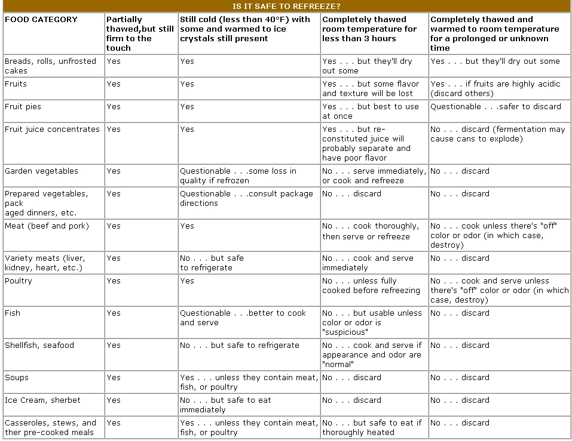

Freezing is one of the best methods available to preserve edibles, particularly if food quality and convenience in preparation for storage are of primary Importance. Unfortunately, however, the process does force you to rely upon a fallible electrical appliance.And you can almost bank on the fact that sometime, somehow-probably through no fault of your own-that freezer Is going to stop cooling . . . usually with little or no notice.
Spring storms, for example, sometimes knock out electrical power to entire neighborhoods for days at a time.The appliance itself may develop a problem, or a household pet could accidentally unplug it! But no matter how the malfunction occurs, there are ways to prevent food spoilage until the problem is solved.
The first thing NOT to do when your freezer falls is open the door to check on the food! Little, if any, thawing will take place during the first 12 hours . . . provided the temperature within had been set at or near 0°F. An unopened, fully loaded freezer can actually keep food safe for up to two days without electricity . . . while a partially loaded chest will be effective for up to one day. (The moral is keep your freezer full, even if you have to use plastic gallon jugs filled with water to take up the empty spaces.)Other rules of thumb: The colder the food at the time of the mishap, the longer and better it'll keep . . . and the larger the freezer capacity, the longer the food will stay frozen.
So if you're reasonably certain your electrical power will resume within 24 hours-or if you've replugged the freezer and scolded the puppy (in this case, you may have to open the appliance to determine how long ago Fido tripped over that cord)-it's probably best to leave your frozen edibles alone. But should It appear that the device will be out of service for longer than one day, it's wise to try to move your goods to a friend's freezer-or to a rental cold-storage locker-for the duration . . . because even a large, fully loaded freezer just might not be able to recover and refreeze the huge quantities of food it contains before spoilage starts to set in. (If you do move your frozen edibles, remember to "insulate" them well for the journey by wrapping items in newspapers and blankets.)
If you don't have any convenient way to move your food, try purchasing some dry ice instead . . . 25 pounds will maintain a ten-cubic-foot freezer for two to three days. (To determine the necessary amount, just multiply the cubic-foot capacity of your appliance by 2.5.)
You can locate sources of dry ice by consulting the Yellow Pages of your phone directory. Outlets may be listed under ice cream manufacturers and refrigeration suppliers . . . or you might try firms that sell compressed gas. Local dairies, fish markets, or electric utility companies may also be of assistance in locating a source.
Remember always to wear heavy gloves or use tongs when handling dry ice, to minimize the risk of being "burned" by the substance. And be certain the area around your freezer has adequate ventilation during the loading process . . . since the thawing ice gives off tremendous amounts of carbon dioxide. Place the "cubes" (always on a heavy piece of cardboard) directly over the food, since cold air moves downward . . . and close the door.(If your freezer is only partially full, move all the items close together.)
Let's suppose the worst has happened. You unsuspectingly open the freezer door one day and discover that all the packages inside are well on their way to being completely defrosted.What do you do? First, check the foods to see if any still contain ice crystals. Those that do are safe to eat, and many of them can be refrozen. Cold foods, even If no ice crystals are present, can also be considered safe but must be cooked before being returned to the freezer. (it's important to remember that refrozen foods, or frozen cooked foods, need to be used as quickly as possible to guarantee maximum nutritional quality.)
Never refreeze thawed vegetables (they may contain botulism spores, which would have ample time to grow and reproduce during the time it takes to refreeze) . . . casserole dishes that contain meat, fish, or poultry . . . or melted ice cream. And naturally, always use good judgment and toss out any food that looks or smells even a little suspicious.
Finally, use the accompanying chart to help determine how to handle specific categories of edibles. Remember, If there's any doubt, throw it out. No food is worth the risk of poisoning yourself or someone else.
|
 |
|
|